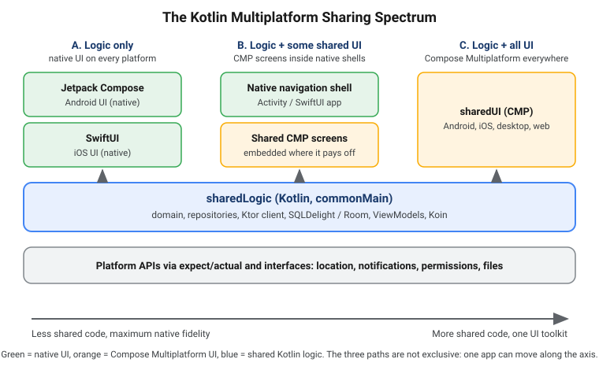

What Kotlin Multiplatform Is and When to Use It
|
This content was generated with the assistance of AI and should be verified against the official documentation before being relied on in production. |
Kotlin Multiplatform (KMP) is JetBrains' technology for writing code once in Kotlin and compiling it for several platforms, while keeping full access to each platform’s own APIs. This first page answers the questions that come before any Gradle file: what KMP actually is, how it compares with writing two native apps or adopting another cross-platform framework, how much of an app you can share, how mature each platform is, and how to decide whether it fits your project.
This section targets Kotlin 2.4.20, Compose Multiplatform (CMP) 1.12.1, Android Gradle Plugin (AGP) 9.4.1
and Xcode 26.4, the baseline verified at the time of writing. Every page uses one running example,
TrailMate Everywhere: the hiking-trail app from the Android section
(Android) made multiplatform, in the package com.example.trailmate. It has a
sharedLogic module (domain, data, ViewModels), a sharedUI module (Compose Multiplatform screens), and thin
androidApp, iosApp, desktopApp and webApp entry points. This section never re-teaches the Kotlin language
(see the Kotlin Reference), Jetpack Compose basics (see
Compose Fundamentals) or SwiftUI basics (see
Apple Platforms); it links to them.
What Kotlin Multiplatform is
KMP is a set of compiler targets, a Gradle plugin, a source-set model and a library ecosystem that together let one Kotlin codebase produce artifacts for different platforms. The key idea is selective sharing: you decide, module by module and even file by file, what is shared and what stays platform specific.
| Piece | What it does |
|---|---|
Kotlin compilers |
One Kotlin frontend (K2) feeds several backends: JVM bytecode (Android, desktop, server), Kotlin/Native (iOS, macOS, Linux, Windows, via LLVM), Kotlin/JS and Kotlin/Wasm for the web. See How KMP Compiles. |
KMP Gradle plugin |
|
expect/actual and interfaces |
Common code declares what it needs; each platform supplies the implementation and can call any native API. See expect/actual. |
Multiplatform libraries |
kotlinx.coroutines, kotlinx.serialization, Ktor, SQLDelight, Koin and many more publish one artifact per target. See Dependencies and the Library Ecosystem. |
Compose Multiplatform (optional) |
JetBrains' declarative UI framework, built on Jetpack Compose, for Android, iOS, desktop and web. It is a separate decision from KMP itself. |
KMP is not a UI framework, a runtime, or a virtual machine. On Android and the JVM the shared code is ordinary bytecode; on iOS it is compiled ahead of time to a native framework that Swift and Objective-C call like any other library. Nothing interprets your code on the device.
A minimal shared function shows the idea. The common code is plain Kotlin, and each platform may add its own piece.
// sharedLogic/src/commonMain/kotlin/com/example/trailmate/domain/Trail.kt
package com.example.trailmate.domain
enum class Difficulty { EASY, MODERATE, HARD }
data class Trail(
val id: String,
val name: String,
val region: String,
val lengthKm: Double,
val difficulty: Difficulty,
val photoUrl: String?,
val isFavorite: Boolean = false,
)
// Pure Kotlin: compiled once for every target (JVM, iOS, wasmJs, ...)
fun Trail.estimatedHours(paceKmPerHour: Double = 4.0): Double = lengthKm / paceKmPerHourNative, cross-platform and multiplatform
Three broad strategies exist for shipping the same product on several platforms. They differ in what is shared, in who owns the UI, and in what changes when a platform ships something new.
| Fully native | Classic cross-platform | Kotlin Multiplatform | |
|---|---|---|---|
Codebases |
One per platform (Kotlin + Swift) |
One (Dart, TypeScript, C#) |
One shared Kotlin core plus thin native code where wanted |
UI |
Native toolkit on each platform |
One framework-owned UI layer, drawn by the framework or mapped to native widgets |
Your choice: native UI, shared CMP UI, or both in the same app |
Platform API access |
Direct and immediate |
Through plugins or bridges that must be written or found |
Direct: platform code is ordinary Kotlin or Swift next to shared code |
Language and tooling |
Platform languages and IDEs |
A new language and toolchain for at least one team |
Kotlin for Android developers; Swift and Xcode remain for the iOS shell |
New OS features |
Available on day one |
Wait for the framework or a plugin |
Available on day one in the native layer; shared UI via CMP follows its release train |
Main cost |
Every feature is built, tested and fixed twice |
Abstraction gap, framework upgrades, hard escape hatches |
A build and interop layer to learn; iOS developers read some Kotlin |
The cost of keeping two codebases in sync
Two native apps look cheap per feature until you count synchronization: each business rule (price rounding, offline merge, validation, permission logic) is implemented twice, tested twice and fixed twice, and the two implementations slowly drift apart. Bugs become "works on iOS, broken on Android" reports, and a rule change is only done when both teams finish it. The cost is not the first implementation; it is coordination, specification and regression testing for the life of the product.
Classic cross-platform frameworks remove that duplication but introduce a different cost: the assumed saving (write once, run everywhere) often differs from the actual one. Teams still need platform specialists for native integrations, accessibility details, platform conventions, SDK upgrades and store-specific work, and a framework-owned UI layer can lag behind or diverge from what users expect on each platform.
KMP aims to keep the saving where it is largest and least visible (logic that must behave identically) and make the rest an explicit choice. A realistic assessment weighs:
-
What is shared: the larger and more rule-heavy the shared part, the more the duplication saving matters.
-
Who writes it: shared Kotlin is written by Kotlin developers, but iOS engineers must be comfortable reading and debugging it.
-
Build complexity: a multiplatform Gradle build, an iOS framework and Xcode integration add moving parts that a single-platform app does not have.
-
Platform fidelity: native UI per platform gives maximum fidelity; shared UI trades some of it for speed.
The spectrum of sharing
KMP does not force an all-or-nothing choice. The figure shows the three common positions along the axis, from sharing only logic to sharing nearly everything.

Position A: share logic only
Each platform keeps its native UI, and only the non-visual layers are shared: models, networking, persistence, caching rules, ViewModels and use cases. Android developers keep Jetpack Compose; iOS developers keep SwiftUI. The shared module is exported as a framework that Swift imports.
// sharedLogic/build.gradle.kts
plugins {
alias(libs.plugins.kotlinMultiplatform)
alias(libs.plugins.androidKotlinMultiplatformLibrary) // com.android.kotlin.multiplatform.library
alias(libs.plugins.kotlinSerialization)
}
kotlin {
android {
namespace = "com.example.trailmate.shared"
compileSdk = 37
minSdk = 26
}
listOf(iosArm64(), iosSimulatorArm64()).forEach { target ->
target.binaries.framework {
baseName = "SharedLogic"
isStatic = true
}
}
sourceSets {
commonMain.dependencies {
implementation(libs.kotlinx.coroutines.core)
implementation(libs.ktor.client.core)
}
}
}The iOS app then consumes the shared ViewModel from Swift. How the Kotlin StateFlow becomes something SwiftUI can
observe is covered in Coroutines and Flow from Swift.
// iosApp/iosApp/TrailListView.swift
import SwiftUI
import SharedLogic
struct TrailListView: View {
@State private var trails: [Trail] = []
private let viewModel = TrailListViewModel()
var body: some View {
List(trails, id: \.id) { trail in
Text("\(trail.name) - \(trail.lengthKm, specifier: "%.1f") km")
}
.task {
// Observation helper (SKIE, KMP-NativeCoroutines or Swift export) turns Flow into AsyncSequence.
for await state in viewModel.uiState {
trails = state.trails
}
}
}
}This position has the lowest risk for existing apps: the native UI, accessibility behavior and release process stay exactly as they are, and you migrate one feature at a time. It is the path described in Adopting KMP in Existing Apps.
Position B: share logic and some UI
Compose Multiplatform can be embedded in a native app screen by screen. A SwiftUI app can host a CMP screen through
a UIViewController, and a CMP screen can embed native views (TrailMate embeds an MKMapView this way). This suits
teams that want a shared settings or onboarding flow but keep platform-specific screens native.
Position C: share logic and all UI with CMP
A single sharedUI module with TrailListScreen, TrailDetailScreen, SettingsScreen and an App() composable
runs on Android, iOS, desktop and the web. Platform entry points shrink to a few lines.
// sharedUI/src/commonMain/kotlin/com/example/trailmate/ui/App.kt
package com.example.trailmate.ui
import androidx.compose.material3.MaterialTheme
import androidx.compose.material3.Text
import androidx.compose.runtime.Composable
@Composable
fun App() {
MaterialTheme {
Text("TrailMate Everywhere")
}
}
// iosApp entry point (sharedUI/src/iosMain/kotlin/com/example/trailmate/MainViewController.kt)
// fun MainViewController() = androidx.compose.ui.window.ComposeUIViewController { App() }Compose Multiplatform is covered in depth starting at Compose Multiplatform Fundamentals.
Comparing the three positions
| A. Logic only | B. Logic + some UI | C. Logic + all UI | |
|---|---|---|---|
Shared share of code |
Typically the data and domain layers |
Data, domain and selected screens |
Nearly everything except entry points |
UI toolkit |
Jetpack Compose / SwiftUI |
Native plus CMP |
Compose Multiplatform |
iOS developers write |
Swift UI and glue |
Swift shell and some UI |
Almost no Swift |
Platform look and feel |
Fully native |
Native where it matters |
Material or custom design, adapted per platform |
Best fit |
Existing apps, teams with both platform specialties |
Gradual adoption of shared UI |
New apps, small teams, desktop and web targets |
A common mistake is treating the position as a permanent architectural choice. Because the logic layer is identical in all three, you can start at position A and later introduce CMP screens, or the reverse, without rewriting the shared module.
Use cases and who uses it in production
JetBrains documents KMP use cases by business type (startups, small and medium businesses, enterprises that need consistent behavior across devices, agencies, companies expanding to new markets, and SDK teams) and by industry (financial technology, media and publishing, project management and productivity, transportation, education, e-commerce, social networking, health and wellness, and postal services). Public case studies and talks come from well-known companies, including teams at Netflix, Philips, McDonald’s, Cash App and Google (Workspace documents use KMP for shared logic), among many others; the official use-cases page lists current examples and is the place to check before quoting an adopter.
Typical reasons to adopt KMP:
-
Greenfield apps with a small team: start with shared logic and CMP UI to reach Android and iOS with one team.
-
Existing native apps: share one module at a time, such as networking or a pricing engine, without touching UI.
-
Consistent business rules: financial calculations, offline sync and validation must match on every platform.
-
SDKs and libraries: publish one Kotlin library as an AAR, an XCFramework and an npm package, as TrailMate’s
com.example:trail-geolibrary does (see Publishing Multiplatform Libraries). -
Server and client sharing: the same Kotlin models and validation on the JVM backend and on the clients.
-
Desktop and web reach: reuse the same CMP UI on desktop (JVM) and on the web (Wasm).
Stability: what Stable, Beta, Alpha and Experimental mean
JetBrains labels every component with a stability level, and the labels drive upgrade decisions, so read them as promises about compatibility rather than quality.
| Level | What it means for you |
|---|---|
Stable |
Safe for production. JetBrains commits to backward compatibility in future releases and follows a deprecation cycle for changes. |
Beta |
Feature-complete and close to final, but incompatible changes are still possible. Fine for production use if you accept occasional migration work and pin versions. |
Alpha |
Early preview. It may change incompatibly or be removed. Use for evaluation or in non-critical code, behind an abstraction you can replace. |
Experimental |
Under active exploration, may be dropped at any time, and usually requires an opt-in (a compiler flag or an
|
Stability of KMP by platform
KMP itself has been Stable since Kotlin 1.9.20. Stability then varies by target.
| Platform / target | Level | Notes |
|---|---|---|
Android |
Stable |
Android Gradle plugin |
iOS ( |
Stable |
Kotlin/Native Tier 1 targets; requires macOS and Xcode to build |
Desktop (JVM) |
Stable |
Windows, macOS and Linux through the JVM |
Server (JVM) |
Stable |
Ktor, Spring Boot and any JVM stack |
Web on Kotlin/JS |
Stable |
JavaScript output, usable from existing JS/TS projects |
Web on Kotlin/Wasm |
Beta |
|
watchOS, tvOS |
Beta |
Kotlin/Native Tier 2 Arm targets with smaller library support |
Linux, Windows (Native) |
Tier 2 and Tier 3 Native targets |
Compiled with Kotlin/Native; check the per-library support |
Related, narrower features in this section carry their own levels, which each page repeats where it uses them:
Swift export and SwiftPM import are Alpha, Objective-C and C interop is Beta, expect/actual
classes are Beta, the Kotlin Toolchain (formerly Amper) is Alpha, and the CMP UI test API
(runComposeUiTest) is Experimental. Kotlin/Native target tiers, which describe how much testing a target
receives, are explained in How KMP Compiles.
Stability of Compose Multiplatform by platform
CMP 1.12.1 is based on Jetpack Compose 1.12.1 and has its own per-platform levels.
| Platform | Level | Notes |
|---|---|---|
Android |
Stable |
Same Jetpack Compose runtime; minimum API 21 |
iOS |
Stable |
Rendered with Skia on a native view; minimum iOS 14 |
Desktop (JVM) |
Stable |
Includes Compose Hot Reload (1.2.0, desktop JVM only) |
Web (Wasm) |
Beta |
Beta since CMP 1.9; the Kotlin/JS web target has a narrower set of features |
The Compose compiler plugin is org.jetbrains.kotlin.plugin.compose and always uses the Kotlin version, so there is
no separate compiler-version matrix to maintain.
Google’s official support for KMP
Google officially supports Kotlin Multiplatform for sharing business logic between Android and other platforms, and publishes multiplatform versions of several Jetpack libraries. Google groups platforms into support tiers.
| Tier | Platforms |
|---|---|
Tier 1 |
Android, JVM and iOS |
Tier 2 |
macOS and Linux |
Tier 3 |
watchOS, tvOS, Windows, JS and Wasm |
Jetpack libraries available for KMP include Lifecycle and ViewModel, SavedState, Navigation and Navigation 3, NavigationEvent, Paging, DataStore, Room and Room 3, SQLite and Collection. Google’s guidance on adding KMP to an Android project, including the Android-KMP library plugin, lives on the Android Developers site. TrailMate’s Android section shows the native equivalents; for example Room and Paging and ViewModel and Coroutines.
Google’s tiers and JetBrains' stability levels answer different questions. Google’s tier says how much Jetpack library coverage and platform integration to expect; JetBrains' level says how stable the Kotlin component is.
Comparing with Flutter and React Native
All three let a small team target several platforms, but they make different bets.
| Kotlin Multiplatform / CMP | Flutter | React Native | |
|---|---|---|---|
Language |
Kotlin (plus Swift for native iOS UI) |
Dart |
TypeScript / JavaScript |
UI approach |
Native UI, or CMP rendered by Skia on every platform |
Own rendering engine draws every widget |
Native views driven by React components |
Sharing model |
Share only what you choose |
Share nearly everything |
Share nearly everything |
Adopt in an existing app |
Incremental, module by module |
Possible as an embedded add-to-app module |
Possible as brownfield integration |
Platform API access |
Direct from Kotlin or Swift |
Platform channels and plugins |
Native modules and components |
Runtime on device |
Compiled native code or bytecode, no interpreter |
Compiled Dart with its own engine |
JavaScript engine (Hermes) plus native bridge layer |
Platforms |
Android, iOS, desktop, web, server |
Mobile, web, desktop |
Mobile, plus community targets |
JetBrains publishes dedicated comparisons with each framework. Flutter is the closest match to CMP: a single UI toolkit that draws its own pixels. React Native is closest to KMP’s native-UI path: shared logic with native widgets, though in TypeScript. If your team is already strong in TypeScript and React, see React Native in this documentation, including its architecture overview.
Picking the framework from this table alone would be a mistake: the deciding factors are usually existing team skills, existing code, and which platforms must feel fully native.
Choosing: a decision flow
The flow below is a starting point, not a verdict. Follow it from the top and read the labels as questions about your team and product.
Practical rules of thumb that go with the flow:
-
Pick native only when the product is single-platform, depends heavily on cutting-edge platform APIs, or the teams are already large, stable and well synchronized.
-
Pick KMP with native UI when business rules must match everywhere and platform UI quality is a product differentiator.
-
Pick KMP with CMP when you want Android, iOS, desktop and web from one Kotlin codebase, accepting that web (Wasm) is Beta.
-
Pick React Native or Flutter when the team’s strengths and existing assets lie there and you do not need Kotlin on the server or Android.
-
Run a pilot before committing: share one real module (TrailMate’s
trail-geohelpers, or its Ktor client) and measure build time, debugging experience and team reaction.
Common mistakes when deciding include picking a framework for demo speed rather than for the third year of maintenance, ignoring that iOS developers need a way to read and debug Kotlin, and assuming that sharing UI is required to benefit from KMP.
What KMP asks of your team
Adopting KMP changes a few daily practices. None are blockers, but each needs an owner.
| Area | What changes |
|---|---|
Android developers |
Shared modules use the |
iOS developers |
Xcode builds call Gradle to compile the shared framework; they read Kotlin when debugging, and see Swift-flavoured names generated from Kotlin APIs. |
Build and CI |
iOS builds need a macOS runner with a pinned Xcode (26.4 for Kotlin 2.4.20); Gradle cache and configuration cache matter more. |
API design |
The public Kotlin API becomes a contract with Swift consumers: prefer simple data types, sealed hierarchies and well-named ViewModels over deep generics. |
Dependencies |
Libraries must publish per-target variants; the ecosystem (klibs.io) is large but not universal, so check each dependency before committing. |
How this section is organized
The section follows a path from "should I?" to "how do I ship it?". Read in order the first time and jump around afterwards.
| Part | Pages |
|---|---|
Foundations |
This page, then How KMP Compiles, Getting Started and Tooling, Project Structure, Gradle Configuration, The Android Target and AGP 9, expect/actual and Dependencies and the Library Ecosystem |
Sharing business logic |
Kotlin for Swift developers, coroutines and concurrency, architecture and shared ViewModels, Ktor networking, local storage, dependency injection, essential libraries, iOS integration, interop with Swift, Flow from Swift, and Kotlin/Native memory and performance. Start with Kotlin for Swift Developers and Architecture and Shared ViewModels. |
Sharing UI with Compose Multiplatform |
Fundamentals, resources, navigation and lifecycle, adaptive UI and accessibility, CMP on iOS, desktop, and the web with Kotlin/Wasm and Kotlin/JS. Start with Compose Multiplatform Fundamentals. |
Quality and delivery |
Testing, publishing libraries, publishing apps, CI/CD with GitHub Actions and adopting KMP in existing apps |
One naming note: Apple’s own multi-platform targets (one app for iPhone, iPad, Mac and so on) are a different subject from Kotlin Multiplatform; see Apple multiplatform projects for that. The same applies to the old name "KMM" (Kotlin Multiplatform Mobile), which has been retired in favor of "KMP".
Common mistakes
-
Assuming KMP means shared UI. Logic-only sharing is the most common production setup, and it is fully supported.
-
Treating Beta targets as Stable. Kotlin/Wasm and CMP for the web are Beta; plan for migration work.
-
Mixing up KMP and CMP. KMP shares Kotlin code; CMP is an optional UI framework built on top of it.
-
Ignoring the iOS toolchain. Apple targets only compile on macOS with Xcode, so Linux or Windows CI cannot build them.
-
Sharing too early. Moving everything to
commonMainbefore you know which parts diverge leads to leaky abstractions; start with the code that is identical today. -
Choosing from feature lists alone. A pilot module tells you more than a comparison table.
Where to go next
If you are new to the tooling, continue with How KMP Compiles, then Getting Started and Tooling to create your first project. If Kotlin is new to you, begin with the Kotlin getting started page and the Kotlin for Android notes.